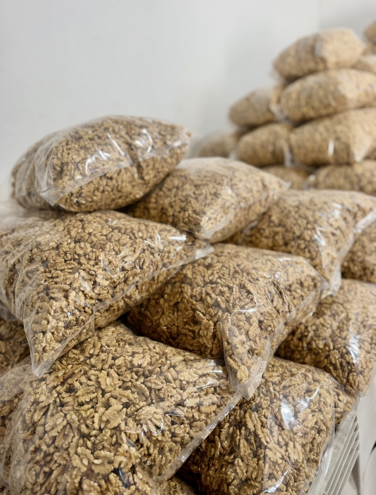

Frutos secos premium. Desde el Valle de Uco. Calidad y Excelencia.
Finca Fina nace en el Valle de Uco, Mendoza, con un propósito claro: llevar la excelencia de los frutos secos a cada rincón del país y del mundo. Especialistas en nueces premium, almendras, pistachos, pasas de uva y mixs. Somos una empresa familiar destacada por el compromiso con la calidad en cada etapa del proceso: desde la producción hasta la atención personalizada a cada cliente.
Finca Fina no solo vende frutos secos, entrega experiencias. Bajo la premisa de brindar una atención cercana, eficiente y profesional, garantizando un servicio de excelencia tanto en el mercado local como en operaciones de exportación.

Almendras — Valle de UcoPor qué elegirnos
01
Producción propia en el Valle de Uco, Mendoza. Trazabilidad completa desde la planta hasta el empaque.
02
Selección rigurosa de cada lote. Nueces, almendras, pistachos y pasas de uva de primera categoría.
03
Experiencia en mercado local e internacional. Gestión profesional de cada operación de exportación.
04
Empresa familiar con atención personalizada. Respondemos rápido y nos adaptamos a cada cliente.
Podés conocer nuestros productos desde cerca en el Mercado Cooperativo de Guaymallén, Mendoza, Argentina.
Trabajamos con distribuidores, revendedores, restaurantes y consumidores finales que valoran la calidad por encima de todo. Si buscás frutos secos que marcan la diferencia, estás en el lugar indicado.
Contacto